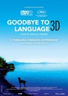
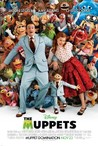
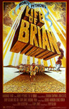
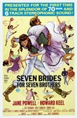
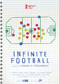
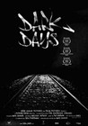
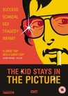

Movie Releases By Score

|
2001.
My Beautiful Laundrette
Release Date:
April 4, 1986

An ambitious Pakistani Briton and his white boyfriend strive for success and hope when they open a glamorous laundromat.
|
2002.
Touch the Sound: A Sound Journey with Evelyn Glennie
Release Date:
September 7, 2005
Through the rhythms of Evelyn Glennie we touch the sound – we feel the beat of the universe. Thomas Riedelsheimer takes us on an expedition with Scottish percussionist Evelyn Glennie into the center of the sound world – a journey involving each of our senses. See, Feel, Embrace the sound. Evelyn’s postcards from her journey across the world feed into the creation of music from the interior of one of the most unique perspectives of sound and image on the planet. (Shadow Distribution)
|
|

|
2003.
Girl on the Bridge
Release Date:
July 28, 2000
A girl on a bridge who contemplates suicide is met by a professional knife thrower. He recruits her to become the new human target in his travelling circus act in France, where the girl encounters a new sensual and suspenseful lifestyle.
|

|
2004.
Croupier
Release Date:
April 21, 2000
A struggling writer (Clive Owen) finds a job at a casino to support his craft and to collect material for his novel, but he becomes embroiled in the temptations that come with his new life.
|
2005.
Jing Ke ci Qin Wang
Release Date:
December 17, 1999
Zhao (Gong Li) is a concubine in China in the 20th century BC who is sent by her lover to become the lover of his adversary, gain his confidence, and then secure an assassin who can eliminate him.
|
|
2006.
The Cider House Rules
Release Date:
December 10, 1999

This is the story of a compassionate young man (Maguire), raised in an orphanage and trained to be a doctor by the abortionist (Caine) who runs the orphanage.
|
|
2007.
Tumbleweeds
Release Date:
November 24, 1999
A mother (McTeer) and a daughter (Brown) constantly run from town to town to escape failed relationships.
|
|
2008.
Fyre
Release Date:
January 18, 2019
An exclusive behind the scenes look at the infamous unraveling of the Fyre music festival.
|
|
2009.
Félicité
Release Date:
October 27, 2017
Félicité is a proud, free-willed woman working as a singer in a bar in Kinshasa. Her life is thrown into turmoil when her 14-year-old son falls victim to an accident. To save him, she sets out on a breakneck race through the streets of electric Kinshasa – a world of music and dreams where she’ll cross paths with Tabu.
|
|
|  |
2010.
Goodbye to Language 3D
Release Date:
October 29, 2014
The idea is simple: A married woman and a single man meet. They love, they argue, fists fly. A dog strays between town and country. The seasons pass. The man and woman meet again. The dog finds itself between them. The other is in one, the one is in the other and they are three. The former husband shatters everything. A second film begins: the same as the first, and yet not. From the human race we pass to metaphor. This ends in barking and a baby's cries. In the meantime, we will have seen people talking of the demise of the dollar, of truth in mathematics and of the death of a robin.
|

|
2011.
Time to Choose
Release Date:
June 3, 2016
Academy Award® winning documentary filmmaker Charles Ferguson explores the comprehensive scope of the climate change crisis and examines the power of solutions already available. Through interviews with world-renowned entrepreneurs, innovators, thought leaders and brave individuals living on the front lines of climate change, Ferguson takes an In-depth look at the remarkable people working to save our planet.
|

|
2012.
The Day Shall Come
Release Date:
TBA
Based on 100 true stories, the explosive new film from Chris Morris is an emotionally gripping, laugh out loud thriller that exposes the dark farce at the heart of the homeland security project: It is harder to catch a real terrorist than it is to manufacture your own. [SXSW]
|
2013.
Infernal Affairs
Release Date:
September 24, 2004
A tightly wound thriller which centers on two Hong Kong police officers - one a gang mole on the force and the other an undercover cop in the gang - who share the same objectives and who find their destinies intertwined in this high-octane police actioner. [Miramax]
|
|
2014.
Bernie
Release Date:
April 27, 2012
In the tiny, rural town of Carthage, TX, assistant funeral director Bernie Tiede was one of the town’s most beloved residents. He taught Sunday school, sang in the church choir and was always willing to lend a helping hand. Everyone loved and appreciated Bernie, so it came as no surprise when he befriended Marjorie Nugent, an affluent widow who was as well known for her sour attitude as her fortune. Bernie frequently traveled with Marjorie and even managed her banking affairs. Marjorie quickly became fully dependant on Bernie and his generosity and Bernie struggled to meet her increasing demands. Bernie continued to handle her affairs, and the townspeople went months without seeing Marjorie. The people of Carthage were shocked when it was reported that Marjorie Nugent had been dead for some time, and Bernie Tiede was being charged with the murder. (Millennium Entertainment)
|
|

|
2015.
Chasing Ice
Release Date:
November 9, 2012
In the spring of 2005, acclaimed environmental photographer James Balog headed to the Arctic on a tricky assignment for National Geographic: to capture images to help tell the story of the Earth’s changing climate. Even with a scientific upbringing, Balog had been a skeptic about climate change. But that first trip north opened his eyes to the biggest story in human history and sparked a challenge within him that would put his career and his very well-being at risk.
Chasing Ice is the story of one man’s mission to change the tide of history by gathering undeniable evidence of our changing planet. (National Geographic Channel)
|

|
2016.
Bridesmaids
Release Date:
May 13, 2011
Annie's life is a mess. But when she finds out her lifetime best friend is engaged, she simply must serve as Lillian's maid of honor. Though lovelorn and broke, Annie bluffs her way through the expensive and bizarre rituals. With one chance to get it perfect, she'll show Lillian and her bridesmaids just how far you'll go for someone you love. (Universal Pictures)
|
2017.
Tibet: Cry of the Snow Lion
Release Date:
September 19, 2003
A sweeping and compelling look at the struggle of the Tibetan people for freedom over the course of more than five decades. (Artistic License Films)
|
|

|
2018.
The Invisible Woman
Release Date:
December 25, 2013
Nelly (Felicity Jones), a happily-married mother and schoolteacher, is haunted by her past. Her memories, provoked by remorse and guilt, take us back in time to follow the story of her relationship with Charles Dickens (Ralph Fiennes) with whom she discovered an exciting but fragile complicity. [Sony Pictures Classics]
|
2019.
Tully
Release Date:
May 4, 2018
Marlo (Charlize Theron), a mother of three, including a newborn, is gifted a night nanny by her brother (Mark Duplass). While at first hesitant to accept the extravagance, she comes to form a unique bond with the thoughtful, surprising, and sometimes challenging young nanny, Tully (Mackenzie Davis).
|
|
|  |
2020.
The Muppets
Release Date:
November 23, 2011

On vacation in Los Angeles, Walter, the world's biggest Muppet fan, and his friends Gary and Mary from Smalltown, USA, discover the nefarious plan of oilman Tex Richman to raze the Muppet Theater and drill for the oil recently discovered beneath the Muppets' former stomping grounds. To stage The Greatest Muppet Telethon Ever and raise the $10 million needed to save the theater, Walter, Mary and Gary help Kermit reunite the Muppets, who have all gone their separate ways: Fozzie now performs with a Reno casino tribute band called the Moopets, Miss Piggy is a plus-size fashion editor at Vogue Paris, Animal is in a Santa Barbara clinic for anger management, and Gonzo is a high-powered plumbing magnate. [Walt Disney Pictures]
|

|
2021.
Time Out of Mind
Release Date:
September 9, 2015
George (Richard Gere) is a man struggling to find food and a place to sleep in New York City. Shuffled into the unforgiving bureaucracy of a men’s shelter, George seems destined to wind up as just another lost soul swallowed up by the system—until he meets a gregarious, down-and-out ex-jazzman (Ben Vereen) who inspires George to reconnect with his estranged daughter (Jena Malone). [IFC Films]
|

|
2022.
Darkest Hour
Release Date:
November 22, 2017
During the early days of World War II, with the fall of France imminent, Britain faces its darkest hour as the threat of invasion looms. As the seemingly unstoppable Nazi forces advance, and with the Allied army cornered on the beaches of Dunkirk, the fate of Western Europe hangs on the leadership of the newly-appointed British Prime Minister Winston Churchill (Gary Oldman). While maneuvering his political rivals, he must confront the ultimate choice: negotiate with Hitler and save the British people at a terrible cost or rally the nation and fight on against incredible odds.
|

|
2023.
An Inconvenient Truth
Release Date:
May 24, 2006
This documentary offers a passionate and inspirational look at Al Gore's fervent crusade to halt global warming's deadly progress in its tracks by exposing the myths and misconceptions that surround it. [Participant Productions]
|
2024.
The Beat That My Heart Skipped
Release Date:
July 1, 2005
In this follow-up to his critical smash "Read My Lips," Jacques Audiard has adapted and updated James Toback’s cult 1978 noir "Fingers" to come up with this memorable character study about a young man torn between a life of crime and classical music. (Wellspring Media)
|
|

|
2025.
I Shot Andy Warhol
Release Date:
May 1, 1996
In 1968, mad, radical-feminist genius Valerie Solanas shot pop-art icon Andy Warhol, seriously wounding him. This film traces her bizarre life leading to that moment, including the writing of her "SCUM Manifesto," which decrees males biologically obsolete. [MGM]
|

|
2026.
Nico, 1988
Release Date:
August 1, 2018
Nico, 1988 follows the singer-songwriter, approaching 50, leading a solitary existence in Manchester, far from her 60s glam days as a Warhol superstar and celebrated vocalist for cult band The Velvet Underground. Her life and career on the fringes, Nico’s new manager Richard convinces her to hit the road again and tour Europe to promote her latest album. Struggling with her demons and the consequences of a muddled life, she longs to rebuild a relationship with her son, whose custody she lost long ago. A brave and uncompromising musician, Nico’s story is the story of a rebirth: of an artist, a mother, and the woman behind the icon.
|

|
2027.
Stefan Zweig: Farewell to Europe
Release Date:
May 12, 2017
The years of exile in the life of Stefan Zweig, one of the most read German-language writers of his time, between Buenos Aires, New York and Brazil. As a Jewish intellectual, Zweig struggles to find the right stance towards the events in Nazi Germany, while searching for a home in the new world. [First Run Features]
|
2028.
Our Little Sister
Release Date:
July 8, 2016
Three sisters - Sachi, Yoshino and Chika - live together in a large house in the seaside town of Kamakura. When they learn of their estranged father’s death, they decide to travel to the countryside for his funeral. There they meet their shy teenage half-sister Suzu for the first time and, bonding quickly, invite her to live with them. Suzu eagerly agrees, and begins a new life with her older sisters.
|
|

|
2029.
Mapplethorpe: Look at the Pictures
Release Date:
March 25, 2016
Using two retrospectives at LA's Getty and LACMA museums as a backdrop, this definitive portrait profiles the controversial artist from early childhood, to his beginnings in NYC and his meteoric rise in the art world, to his untimely death in 1989. [HBO]
|
2030.
I'll See You in My Dreams
Release Date:
May 15, 2015
Carol, a widow in her 70's, is forced to confront her fears about love, family, and death. After her routine is rattled she decides to start dating again and falls into relationships with two very different men.
|
|

|
2031.
Detective Dee and the Mystery of the Phantom Flame
Release Date:
September 2, 2011
A bizarre murder mystery brings together the most powerful woman in China, the soon-to-be-Empress Wu Zetian, and a formerly exiled detective, Dee Renjie, at the infamous Imperial Palace. Hoping that he will solve the crime before her coronation, Wu appoints Dee Chief Judge of the Empire and implores him to combine his indisputable wisdom with his unparalleled martial arts skills to save the future of her dynasty. (Indomina Releasing)
|

|
2032.
The Strange Case of Angelica
Release Date:
December 29, 2010
Late one night, Isaac is summoned by a wealthy family to take the last photograph of young bride, Angelica, who mysteriously passed away. Arriving at their estate, Isaac is struck by Angelica's beauty. But when he looks through his lens, the young woman appears to come to life. For that moment, Isaac will be haunted by Angelica day and night. (The Cinema Guild)
|

|
2033.
Samson and Delilah
Release Date:
October 15, 2010
Samson, a cheeky 15-year-old boy, and Delilah live in an isolated Aboriginal community in the Central Australian desert. Amongst a tiny collection of houses, everything here happens in a cycle. Day in and day out - nothing changes, everything stays the same and no one seems to care. When tragedy strikes they turn their backs on home and embark on a journey of survival. The two teenagers soon discover that life outside the community can be cruel. Though hungry and rejected Samson and Delilah fall in love. It is all they have. It is real. Lost, unwanted and alone they discover that life isn't always fair, but love never judges. [IndiePix]
|

|
2034.
Enchanted
Release Date:
November 21, 2007
A classic Disney fairy tale collides with modern-day New York City in a story about a fairytale princess from the land of Andalasia who is thrust into the heart of New York City by an evil queen. Soon after her arrival, Princess Giselle begins to change her views on life and love after meeting a handsome lawyer. Can a storybook view of romance survive in the real world? (Walt Disney)
|

|
2035.
Lady Vengeance
Release Date:
April 28, 2006
Lady Vengeance is the third film from Park Chanwook's revenge trilogy following "Sympathy for Mr. Vengeance" and "Oldboy". Lee Geum-Ja, at the age of 19, goes to prison for the murder and abduction of a child on behalf of her accomplice Mr. Baek, only to find out that she is betrayed. While in prison, she carefully prepares for her revenge by winning the hearts of her fellow inmates with her kindness, thus earning herself the nickname 'kind Ms. Geum-Ja.' Upon her release from prison after thirteen years, she finally sets out to seek revenge on Baek, with the help of her former prison mates. (Tartan USA)
|
2036.
Make It Funky!
Release Date:
September 9, 2005
A raucous tribute to the musical heritage of New Orleans, this documentary is chock full of blazing performances, fiery archival footage and red-hot conversations with the remarkable men and women who created it. (Sony)
|
|

|
2037.
The Blind Swordsman: Zatoichi
Release Date:
July 23, 2004
Director Takeshi Kitano takes on Japanese cinematic legend Zatoichi. Kitano stars as the blind wanderer with a distinctive red cane and a shock of platinum blonde hair. Softly-spoken, he makes a living as a masseur and by gambling, but his humble, shuffling facade masks a lightning-fast, deadly swordsman. (Miramax)
|

|
2038.
Shrek 2
Release Date:
May 19, 2004
The fairy tale continues as everyone's favorite ogre faces his greatest challenge of all -- the inlaws! (DreamWorks)
|

|
2039.
The Clay Bird
Release Date:
April 30, 2004
A young student is torn between the worlds of Hindu and Muslim religions in this Bangladeshi film directed by Tareque Masud. (Milestone Films)
|

|
2040.
Lawless Heart
Release Date:
February 21, 2003
A sharp, modern love story where lust, love and loyalty are stretched to their limits. Told from three different perspectives, Lawless Heart reveals the comic and subtle realities of modern relationships. (First Look Pictures)
|
2041.
Kippur
Release Date:
November 3, 2000
A look at the 1973 Yom Kippur War, in which Israel was attacked by Syria and Egypt on the holiest day of the Jewish calendar. Movie focuses on the fictionalized exploits of a small military unit assigned to remove the wounded from the Golan Heights combat areas.
|
|
2042.
Elizabeth
Release Date:
November 6, 1998
This historical drama chronicles the life of Queen Elizabeth I, from her days as an innocent young woman through her transformation into England's legendary "Virgin Queen." Formidable. Untouchable. Unbeatable... (Gramercy Pictures)
|
|
|  |
2043.
Monty Python's Life of Brian
Release Date:
August 17, 1979
Monty Python delivers the group's sharpest and smartest satire of both religion and Hollywood's epic films. Set in 33 A.D. Judea where the exasperated Romans try to impose order, it is a time of chaos and change with no shortage of messiahs and followers willing to believe them. At it's center is Brian Cohen, born in Bethlehem in a stable next door, who, by a series of absurd circumstances is caught up in the new religion and reluctantly mistake for the promised messiah, providing ample opportunity for the entire ensemble (Graham Chapman, John Cleese, Terry Gilliam, Eric Idle, Terry Jones and Michael Palin) to shine in multiple roles as they question everyone and everything from ex-lepers, Pontius Pilate and haggling to revolutionaries, crazy prophets, religious fanaticism, Roman centurions and crucifixion, forever changing our biblical view. [Sony Pictures]
|
2044.
Mistress America
Release Date:
August 14, 2015
Tracy (Lola Kirke) is a lonely college freshman in New York, having neither the exciting university experience nor the glamorous metropolitan lifestyle she envisioned. But when she is taken in by her soon-to-be stepsister, Brooke (Greta Gerwig) – a resident of Times Square and adventurous gal about town – she is rescued from her disappointment and seduced by Brooke’s alluringly mad schemes.
|
|

|
2045.
Spy
Release Date:
June 5, 2015
Susan Cooper (Melissa McCarthy) is an unassuming, deskbound CIA analyst, and the unsung hero behind the Agency’s most dangerous missions. But when her partner falls off the grid and another top agent is compromised, she volunteers to go deep undercover to infiltrate the world of a deadly arms dealer, and prevent a global disaster.
|

|
2046.
After Tiller
Release Date:
September 20, 2013
After the assassination of Dr. George Tiller in Kansas in 2009, there are a limited number of doctors left in the country who provide third-trimester abortions for women. After Tiller moves between the rapidly unfolding stories of these doctors, all of whom were close colleagues of Dr. Tiller, and are fighting to keep this service available in the wake of his death. These four people have become the new number-one targets of the pro-life movement, yet continue to risk their lives every day to do work that many believe is murder, but which they believe is profoundly important for their patients' lives. After Tiller shows them confronting harassment from protesters, challenges in their personal lives, and a series of tough ethical decisions.
|

|
2047.
An Unreasonable Man
Release Date:
January 31, 2007
With the help of exciting graphics, rare archival footage and over forty on-camera interviews conducted over the past two years, An Unreasonable Man traces the life and career of Ralph Nader, one of the most unique, important, and controversial political figures of the past half century. (Two Left Legs, LLC)
|

|
2048.
24 City
Release Date:
June 5, 2009
24 City chronicles the dramatic and thunderous fall of a State-owned munitions factory and its conversion into a luxury high-rise apartment complex. Artfully composed, rich in offbeat details, and punctuated with pop songs, 24 City weaves together the stories of three generations of factory workers (some real, some played by actors) into a fascinating oral history of post-revolutionary China and bracing meditation on the massive physical and psychological changes transforming the country. (The Cinema Guild)
|

|
2049.
Night Moves
Release Date:
May 30, 2014
As organic farmer Josh (Jesse Eisenberg), high society dropout Dena (Dakota Fanning) and ex-Marine Harmon (Peter Sarsgaard) plan, carry out and then witness the fallout of an attention-grabbing act of sabotage, they find their own personal limits tested.
|
2050.
The Kingdom of Dreams and Madness
Release Date:
November 28, 2014
Granted near-unfettered access to the notoriously insular Studio Ghibli, director Mami Sunada follows the three men who are the lifeblood of Ghibli – the eminent director Hayao Miyazaki, the producer Toshio Suzuki, and the elusive and influential “other director” Isao Takahata – over the course of a year as the studio rushes to complete two films, Miyazaki’s The Wind Rises and Takahata’s The Tale of The Princess Kaguya. The result is a rare fly on the wall look at the inner workings of one of the world’s most celebrated animation studios, and an insight into the dreams, passion and singular dedication of these remarkable creators. [GKIDS]
|
|

|
2051.
Crude
Release Date:
September 9, 2009
Three years in the making, this riveting new documentary from acclaimed filmmaker Joe Berlinger (Brother's Keeper, Paradise Lost, Metallica: Some Kind of Monster) tells the epic story of one of the largest and most controversial legal cases on the planet. An inside look at the infamous $27 billion "Amazon Chernobyl" case, Crude is a real-life, high stakes legal drama involving global politics, the environmental movement, celebrity activism, human rights advocacy, multinational corporate power, and the fate of disappearing indigenous cultures. (First Run Features)
|

|
2052.
Tanna
Release Date:
September 16, 2016
In the South Pacific, Wawa, a young girl from one of the last traditional tribes, falls in love with her chief’s grandson, Dain. When an intertribal war escalates, Wawa is unknowingly betrothed as part of a peace deal. The young lovers run away, but are pursued by enemy warriors intent on killing them. They must choose between their hearts and the future of the tribe, while the villagers must wrestle with preserving their traditional culture and adapting it to the increasing outside demands for individual freedom. [Lightyear Entertainment]
|

|
2053.
John Wick: Chapter 2
Release Date:
February 10, 2017
Legendary hitman John Wick is forced to back out of retirement by a former associate plotting to seize control of a shadowy international assassins’ guild. Bound by a blood oath to help him, John travels to Rome where he squares off against some of the world’s deadliest killers.
|
2054.
The Escape
Release Date:
May 11, 2018
Tara (Gemma Arterton), a housewife in suburban London, is living a life that is no longer hers: it belongs to her overworked, self-absorbed husband (Dominic Cooper); her young son and daughter; and the numbing routine of housework and childcare. In desperate need of a change, Tara one day makes a bold decision. Armed with a one-way ticket to Paris, she leaves everything behind to rediscover herself in a new city—but walking out on your life isn’t so simple. [IFC Films]
|
|

|
2055.
The Witnesses
Release Date:
February 1, 2008
Paris, summer 1984. Manu arrives in Paris, where he shares a cheap hotel room with his sister Julie. He strikes up a joyous, chaste friendship with Adrien, a wealthy doctor in his early fifties who opens Manu’s eyes to a different way of life. On a trip out on a speedboat, Adrien introduces Manu to Sarah and Mehdi, a young couple who have just had their first child. An unplanned love affair and the onset of the AIDS epidemic - seen by the media and in the collective imagination as a shameful, modern-day plague - upset the ordered tranquility of their individual destinies. Each of them becomes a protagonist in - and witness to - a contemporary tragedy, where those who don’t die may emerge stronger, but not undamaged. (Strand Releasing)
|

|
2056.
Destination Unknown
Release Date:
November 10, 2017
Destination Unknown blends intimate testimony with immersive archive to bring the stories of twelve Holocaust survivors to the screen.
|
2057.
The Battered Bastards of Baseball
Release Date:
July 11, 2014
The Battered Bastards of Baseball is one of baseball's last great, unheralded true stories. In 1973, Hollywood veteran Bing Russell (best known for playing Deputy Clem on "Bonanza") created the only independent baseball team in America at the time, the legendary Portland Mavericks. Bing operated without a Major League affiliation while playing in a city that was considered a wasteland for professional baseball. Tryouts for the Mavericks, which were open to the public, were filled with hopefuls who arrived in droves from every state in America, many of whom had been rejected by organized baseball. Skeptics agreed it would never work. But Bing's Mavericks generated unprecedented success: they shattered attendance records, signed Kurt Russell - Bing's son - as a player and team Vice President, produced the most successful batboy in baseball (filmmaker Todd Field), re-launched the controversial career of Jim Bouton, hired the first female general manager in Baseball, and inspired one of America's beloved bubblegums—Big League Chew. The Battered Bastards of Baseball is as much about the independent spirit as it is about baseball. The Mavericks' in your face attitude was contagious to fans, and during their short reign, they - and Bing Russell - basically held up their middle finger to the sports establishment and said we're playing this game on our terms, not yours. They were the real life Bad News Bears.
|
|
2058.
Side Effects
Release Date:
February 8, 2013
A woman turns to prescription medication as a way of handling her anxiety concerning her husband's upcoming release from prison.
|
|
2059.
Clemency
Release Date:
TBA
Years of carrying out death row executions have taken a toll on prison warden Bernadine Williams. As she prepares to execute another inmate, Bernadine must confront the psychological and emotional demons her job creates, ultimately connecting her to the man she is sanctioned to kill.
|
|

|
2060.
Oceans
Release Date:
April 22, 2010

Disneynature, the studio that presented the record-breaking film Earth, brings Oceans to the big screen on Earth Day, 2010. Nearly three-quarters of the Earth's surface is covered by water and Oceans boldly chronicles the mysteries that lie beneath. Directors Jacques Perrin and Jacques Cluzaud dive deep into the very waters that sustain all of mankind—exploring the playful splendor and the harsh reality of the weird and wonderful creatures that live within. Featuring spectacular never-before-seen imagery captured by the latest underwater technologies, Oceans offers an unprecedented look beneath the sea in a powerful yet enchanting motion picture. (Disneynature)
|

|
2061.
Titanic
Release Date:
December 19, 1997
A fictional romantic tale of a rich girl (Winslet) and a poor bohemian boy (DiCaprio) who meet on the ill-fated voyage of the 'unsinkable' ship.
|

|
2062.
That Evening Sun
Release Date:
November 6, 2009
Abner Meecham flees a nursing facility and returns to his Tennessee farm, only to discover his son has leased his farm to his old foe, Lonzo Choat. The two men end up in a grudge match, claiming their right to the land. (Freestyle Releasing)
|
|  |
2063.
Seven Brides for Seven Brothers
Release Date:
August 6, 1954
In 1850 Oregon, when a backwoodsman brings a wife home to his farm, his six brothers decide that they want to get married too.
|

|
2064.
The Invisible War
Release Date:
June 22, 2012
An investigative and powerfully emotional documentary about the epidemic of rape of soldiers within the US military, the institutions that perpetuate and cover up its existence, and its profound personal and social consequences.
|

|
2065.
The Motorcycle Diaries
Release Date:
September 24, 2004
This film follows an inspiring journey of self-discovery and traces the youthful origins of a revolutionary heart, Che Guevara. (Focus Features)
|
2066.
Metropolis
Release Date:
January 25, 2002
This Japanese anime, set in the future, depicts a grand city-state populated by humans and robots, the cohabitants of a strictly segmented society. (Sony)
|
|

|
2067.
Down from the Mountain
Release Date:
June 15, 2001
A documentary about the musicians behind the songs in the Coen Brothers' film "O Brother, Where Art Thou?"
|
2068.
A Private War
Release Date:
November 2, 2018
In a world where journalism is under attack, Marie Colvin (Rosamund Pike) is one of the most celebrated war correspondents of our time. Colvin is an utterly fearless and rebellious spirit, driven to the frontlines of conflicts across the globe to give voice to the voiceless, while constantly testing the limits between bravery and bravado. After being hit by a grenade in Sri Lanka, she wears a distinctive eye patch and is still as comfortable sipping martinis with London’s elite as she is confronting dictators. Colvin sacrifices loving relationships, and over time, her personal life starts to unravel as the trauma she’s witnessed takes its toll. Yet, her mission to show the true cost of war leads her—along with renowned war photographer Paul Conroy (Jamie Dornan)—to embark on the most dangerous assignment of their lives in the besieged Syrian city of Homs.
|
|
2069.
The Wolfpack
Release Date:
June 12, 2015
Locked away from society in an apartment on the Lower East Side of Manhattan, the Angulo brothers learn about the outside world through the films that they watch. Nicknamed the Wolfpack, the brothers spend their childhood re-enacting their favorite films using elaborate homemade props and costumes. With no friends and living on welfare, they feed their curiosity, creativity, and imagination with film, which allows them to escape from their feelings of isolation and loneliness. Everything changes when one of the brothers escapes, and the power dynamics in the house are transformed. The Wolfpack must learn how to integrate into society without disbanding the brotherhood. [Magnolia Pictures]
|
|
|  |
2070.
Infinite Football
Release Date:
November 9, 2018
After fracturing his fibula in a 1987 game, former Romanian soccer star and current bureaucrat Laurențiu Ginghină now dreams of radically revising his beloved sport’s rules to reduce injuries and, in turn, revolutionize it. With Infinite Football, Romanian New Wave master Corneliu Porumboiu has crafted a hilarious, typically incisive documentary. [Grasshopper Film]
|

|
2071.
Little Children
Release Date:
October 6, 2006
Based on the novel by Tom Perrotta, Little Children centers on a handful of individuals whose lives intersect on the playgrounds, town pools and streets of their small community in surprising and potentially dangerous ways. [New Line Cinema]
|

|
2072.
Terminator 2: Judgment Day
Release Date:
July 3, 1991
In a future, war-ravaged Los Angeles in which the machines have taken over the earth, a faction of human rebels led by an adult John Connor do battle with the cyborgs. Two "intelligent machines" have been dispatched to the past, one -- a replica of the Terminator model T-800 which dominated the original film -- to protect the young Connor, the other -- a shape-shifting metallic T-1000 -- to kill him.
|
2073.
Morris from America
Release Date:
August 19, 2016
Morris Gentry (Markees Christmas) is a 13-year-old who has just relocated with his single father, Curtis (Craig Robinson) to Heidelberg, Germany. Morris, who fancies himself the next Notorious B.I.G., is a complete fish-out-of-water—a budding hip-hop star in an EDM world. To complicate matters further, Morris quickly falls hard for his cool, rebellious, 15-year-old classmate Katrin. Morris sets out against all odds to take the hip-hop world by storm and win the girl of his dreams.
|
|
|
|
2074.
Another Road Home
Release Date:
April 29, 2005
This documentary is the deeply moving story of Israeli filmmaker, Danae Elon's quest to find Musa Obeidallah, the Palestinian man who helped raise her from the time she was a baby until she joined the Israeli army. This film reaches out with unsentimental acuity seasoned by deep affection, to all who believe in the power of family, trust and friendship. (GeoQuest Entertainment Group)
|
2075.
The Wolf of Wall Street
Release Date:
December 25, 2013
An adaptation of Jordan Belfort's memoir chronicling his rise and fall on Wall Street and his hard-partying, addiction-fueled personal life.
|
|
2076.
Rich Hill
Release Date:
August 1, 2014
Rich Hill intimately chronicles the turbulent lives of three boys living in an impoverished Midwestern town and the fragile family bonds that sustain them.
|
|
|  |
2077.
Dark Days
Release Date:
August 30, 2000
For years, a homeless community took root in a train tunnel beneath New York City, braving dangerous conditions and perpetual night. Dark Days explores this surprisingly domestic subterranean world, unearthing a way of life unimaginable to those above. Through stories simultaneously heartbreaking, hilarious, intimate, and off the cuff, tunnel dwellers reveal their reasons for taking refuge and their struggle to survive underground. Filmed in striking black and white with a crew comprised of the tunnel’s inhabitants and scored by legendary turntablist DJ Shadow (Endtroducing…), Dark Days remains a soulful and enduring document of life on the fringe. [Oscilloscope Pictures]
|

|
2078.
Captain America: Civil War
Release Date:
May 6, 2016
Captain America: Civil War picks up where Avengers: Age of Ultron left off, as Steve Rogers leads the new team of Avengers in their continued efforts to safeguard humanity. After another international incident involving the Avengers results in collateral damage, political pressure mounts to install a system of accountability and a governing body to determine when to enlist the services of the team. The new status quo fractures the Avengers while they try to protect the world from a new and nefarious villain. [Marvel]
|

|
2079.
Nina Forever
Release Date:
February 12, 2016
After his girlfriend Nina dies in a car crash, Rob unsuccessfully attempts suicide. As he begins to overcome his grief, he falls in love with a coworker, Holly. Their relationship is complicated when Nina, unable to find rest in the afterlife, comes back to life to sarcastically torment them whenever they have sex.
|

|
2080.
The Desert of Forbidden Art
Release Date:
March 11, 2011
How does art survive in a time of oppression? During the Soviet rule artists who stay true to their vision are executed, sent to mental hospitals or Gulags. Their plight inspires young Igor Savitsky. He pretends to buy state-approved art but instead daringly rescues 40,000 forbidden fellow artist's works and creates a museum in the desert of Uzbekistan, far from the watchful eyes of the KGB. Though a penniless artist himself, he cajoles the cash to pay for the art from the same authorities who are banning it. Savitsky amasses an eclectic mix of Russian Avant-Garde art. But his greatest discovery is an unknown school of artists who settle in Uzbekistan after the Russian revolution of 1917, encountering a unique Islamic culture, as exotic to them as Tahiti was for Gauguin. They develop a startlingly original style, fusing European modernism with centuries-old Eastern traditions. (inMotion Studios)
|

|
2081.
Stand by Me
Release Date:
August 22, 1986
Stand by Me's screenplay by Raynold Gideon and Bruce A. Evans is based on Stephen King's novella "The Body," a somewhat autobiographical account of an overnight hike by four Oregon youngsters to seek the body of a boy who had been struck by a train. [New York Times]
|
2082.
Finding Vivian Maier
Release Date:
March 28, 2014
Who is Vivian Maier? Now considered one of the 20th century's greatest street photographers, Vivian Maier was a mysterious nanny who secretly took over 100,000 photographs that went unseen during her lifetime. Since buying her work by chance at auction, amateur historian John Maloof has crusaded to put this prolific photographer in the history books. Maier's strange and riveting life and art are revealed through never-before-seen photographs, films, and interviews with dozens who thought they knew her. [IFC Films]
|
|

|
2083.
Super Dark Times
Release Date:
September 29, 2017
Enjoying their normal lives in mid-’90s suburbia, Zach and Josh are best friends with numerous shared interests, chief of which is an attraction to their classmate Allison. One seemingly routine day, along with two other friends, Zach and Josh borrow the latter’s older brother’s prized samurai sword to goof around in the local park. But the afternoon soon spirals out of control. Wracked with guilt, Zach struggles to assimilate back into high school life, even as Allison begins to show a romantic interest in him. The situation gets even more complicated once Zach notices a disturbingly off-balance change in Josh’s behavior.
|
2084.
Middle of Nowhere
Release Date:
October 12, 2012
Middle of Nowhere follows Ruby, a bright medical student who sets aside her dreams and suspends her career when her husband is incarcerated. As the committed couple stares into the hollow end of an eight-year prison sentence, Ruby must learn to live another life, one marked by shame and separation. But through a chance encounter and a stunning betrayal that shakes her to her core, this steadfast wife is soon propelled in new and often shocking directions of self-discovery - caught between two worlds and two men in the search for herself. [AFFRM]
|
|

|
2085.
The Square
Release Date:
April 9, 2010
Escaping the monotony of a loveless marriage, Raymond becomes entangled in an affair with the beautiful and troubled Carla. Ray's moral limits are tested when Carla presents him with the proceeds of her controlling husband's latest crime. This is their chance: Take the money and run. If only it were that simple...(Apparition)
|
|
|
2086.
Beauty in Trouble
Release Date:
June 13, 2008
Beauty in Trouble explores a young woman’s romantic dilemma: torn between a primal connection and the need to provide for her children, she loves two men. Set against the back drop of the recent floods in Prague, Beauty in Trouble is full of unexpected twists, humor and amazing performances culminating in a surprising and paradox ending. (Menemsha Films)
|

|
2087.
The Deserted Station
Release Date:
December 3, 2004
Based on a concept the director and Abbas Kiarostami developed on a photography trip together, a man and a young woman are stranded in a remote village after their car breaks down. The photographer and the sole adult male inhabitant, a schoolteacher, leave to get help while the young woman, herself childless, bonds with the children whose parents are nowhere to be found. (First Run Features)
|

|
2088.
Kitchen Stories
Release Date:
February 20, 2004
In the early '50s the Home Research Institute in Sweden sends 18 observers to the rural district of Landstad, Norway, with its surplus of bachelors, to study the kitchen routines of single men. (IFC Films)
|

|
2089.
Roger Dodger
Release Date:
October 25, 2002
In this coming-of-age tale, a teen boy from the Midwest (Jesse Eisenberg) spends a Friday night out on the town in New York City with his womanizing advertising executive uncle (Campbell Scott).
|
|  |
2090.
The Kid Stays in the Picture
Release Date:
July 26, 2002
Traces the meteoric rise, fall, and rise again of legendary Hollywood producer Robert Evans. Adapted from Mr. Evans's tell-all autobiography, the movie takes the audience on an intimate journey into the mind of this Hollywood legend. (USA Films)
|

|
2091.
Startup.com
Release Date:
May 11, 2001
Acclaimed documentary team Chris Hegedus, D A Pennebaker and newcomer Jehane Noujaim take a behind-the-scenes look at the volatile start-up phenomenon, chronicling the turbulent development of govWorks.com, an award-winning Internet site that facilitates interaction between local government, citizens and businesses. (Artisan Entertainment)
|

|
2092.
Harry Is Here to Help
Release Date:
April 20, 2001
A spiraling descent into fear and the perils of relationships in the tradition of Hitchcock. (Miramax Films)
|

|
2093.
Liberty Heights
Release Date:
November 17, 1999
In this third installment of Barry Levinson's Baltimore trilogy, the youngest son of a middle-class Jewish family pushes the accepted social boundaries of the day by dressing as Hitler for Halloween and pursuing a romantic friendship with a black classmate, as his brother pursues a girl from the other side of the tracks, and his father maintains a numbers racket.
|

|
2094.
The Full Monty
Release Date:
August 13, 1997
After their steel factory shuts down in Sheffield, a desperate group of men looking for work where there is none, form an exotic made dance troupe and are prepared to offer what Chippendale's doesn't...the full monty or total nudity.
|

|
2095.
Les amitiés maléfiques
Release Date:
April 27, 2007
At the start of the new college semester, Eloi and Alexandre encounter André, the most brilliant student in the lecture hall. Fascinated by his ease and charisma, they quickly fall under his spell. André then offers them his friendship in exchange for complete loyalty to him. Lost in admiration, Eloi and Alexandre devotedly submit to this rigorous discipline – up until the day that André abandons them. Eloi and Alexandre now have no other choice than to stand on their own. (Strand Releasing)
|

|
2096.
Born on the Fourth of July
Release Date:
December 20, 1989
Based on a true story, the film follows the young Ron Kovic from a zealous teen who eagerly volunteers for the Vietnam War, to an embittered veteran paralyzed from the mid-chest down. Deeply in love with his country, Kovic returned to an environment vastly different from the one he left, and struggled before emerging as a brave new voice for the disenchanted. (Universal Studios)
|
2097.
Dial M for Murder
Release Date:
May 28, 1954
When American writer Mark Halliday (Robert Cummings) visits the very married Margot Wendice (Grace Kelly) in London, he unknowingly sets off a chain of blackmail and murder. After sensing Margot's affections for Halliday, her husband, Tony Wendice (Ray Milland), fears divorce and disinheritance, and plots her death. Knowing former school chum Captain Lesgate is involved in illegal activities, Tony blackmails him into conspiring to kill Margot. When she kills Lesgate in self-defense, Tony implicates her as being guilty of premeditated murder. Halliday must out-stratagize Tony to save Margot's live. [Warner Bros.]
|
|

|
2098.
2 Autumns, 3 Winters
Release Date:
June 6, 2014
Arman is 33 and ready to make a change, starting with a run in the park. When he literally bumps into Amélie - slightly cynical but nevertheless lovely - on the jogging path, he's dead-set on making a connection with her. As a bit of contrived fate brings them together, Arman's best friend Benjamin suffers an unexpected stroke, relegating him to the hospital for weeks where he falls for his doting young physical therapist. Over the course of two autumns and three winters, Arman, Amélie and Benjamin share the incidental moments, unexpected accidents, unconventional love stories and unforgettable memories that will define who they are. [Film Movement]
|
2099.
Whitney
Release Date:
July 6, 2018
Whitney Houston broke more music industry records than any other female singer in history. With over 200 million album sales worldwide, she was the only artist to chart seven consecutive U.S. No. 1 singles. She also starred in several blockbuster movies before her brilliant career gave way to erratic behavior, scandals and death at age 48. The documentary feature Whitney is an intimate, unflinching portrait of Houston and her family that probes beyond familiar tabloid headlines and sheds new light on the spellbinding trajectory of Houston’s life.
|
|
2100.
Graceland
Release Date:
April 26, 2013
When a kidnapping goes horribly awry, a desperate father risks everything to save his daughter from the men who took her.
|
|